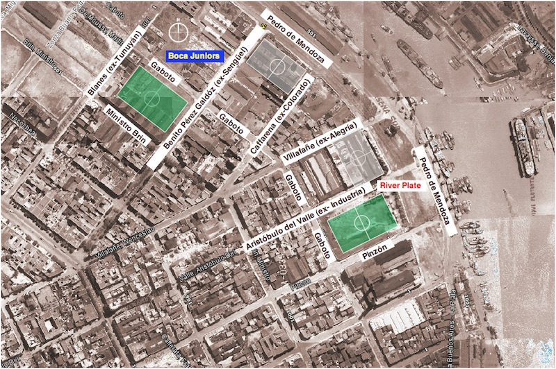

La fundación del Club Atlético River Plate se produjo el 25 de mayo de 1901 en el barrio de La Boca, en Buenos Aires. El club nació a partir de la unión de dos equipos de la zona: Santa Rosa y La Rosales, formados por jóvenes que querían organizarse para practicar fútbol. El nombre “River Plate” surgió cuando uno de los fundadores vio esa inscripción en unos cajones en el puerto y decidió adoptarlo, ya que en esa época era común usar palabras en inglés. Además, hace referencia al Río de la Plata. En sus primeros años, River no tenía estadio propio y jugaba en distintos terrenos de La Boca. Con el tiempo, el club fue creciendo y mudándose de barrio hasta consolidarse como una institución importante. Desde sus inicios, se caracterizó por su organización y por la pasión de sus jugadores e hinchas, lo que sentó las bases de lo que hoy es uno de los clubes más grandes de Argentina.
En 1938 se inauguró el estadio Estadio Monumental, el más grande de Argentina. Durante esa época, River empezó a destacarse por contratar grandes jugadores, lo que le dio el apodo de “Los Millonarios”. En la década del 40 surgió uno de los equipos más famosos de la historia: “La Máquina”, con jugadores como Ángel Labruna y Adolfo Pedernera. Este equipo revolucionó el fútbol por su estilo de juego ofensivo y ganó varios campeonatos.

River acumuló una gran cantidad de títulos locales, convirtiéndose en el club más ganador de ligas en Argentina. A nivel internacional, su mayor logro llegó en 1986, cuando ganó la Copa Libertadores y luego la Copa Intercontinental. Luego la volvio a ganar en 1996, 2015 y 2018 una de la mas recordadas.
El descenso del Club Atlético River Plate en 2011 fue uno de los momentos más duros de su historia. Esto ocurrió tras perder la promoción frente a Belgrano, en una serie muy recordada. El resultado global no le permitió mantenerse en Primera División, por lo que descendió por primera vez a la **Primera B Nacional**, generando un gran impacto en todo el fútbol argentino. Durante la temporada 2011–2012, River jugó en la segunda categoría con el objetivo claro de volver rápidamente. Con el apoyo masivo de sus hinchas en cada partido y un plantel fuerte, logró una campaña sólida. Finalmente, en junio de 2012, tras ganarle a Almirante Brown, River consiguió el ascenso y regresó a Primera División. Este regreso marcó el inicio de una nueva etapa para el club, que poco tiempo después volvería a ser protagonista tanto a nivel nacional como internacional, demostrando su capacidad de recuperación y grandeza.
En la actualidad, el Club Atlético River Plate continúa siendo uno de los equipos más importantes y competitivos del fútbol argentino y sudamericano. Participa constantemente en torneos locales e internacionales, peleando títulos y manteniendo un alto nivel de juego. Además, cuenta con un plantel de jerarquía y una gran base de jugadores surgidos de sus divisiones inferiores. El club también se destaca por su organización, su infraestructura —con el Estadio Monumental como uno de los más modernos de América— y por tener una de las hinchadas más grandes y fieles de Argentina. Todo esto hace que River siga siendo protagonista y un referente del fútbol en la actualidad.